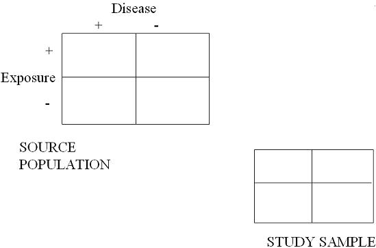
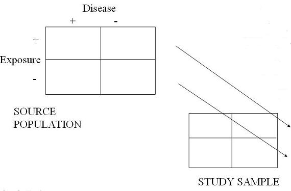
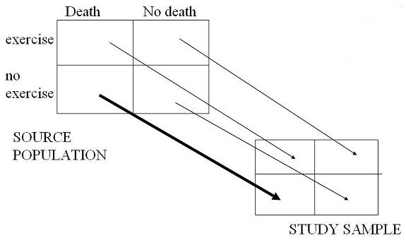

Selection Bias - Cohort Study or Randomized Clinical Trial
Selection Bias in Cohort Studies Less Likely
Among initially selected subjects, selection bias in a cohort study is less likely to occur compared to case-control or CrossSectionalStudy cross-sectional studies.
The Reason: study participants (exposed or unexposed; treatment vs placebo) are selected (theoretically) before the outcome occurs.
As you can see in the 2x2 table below, since disease has not occurred yet among initially selected subjects, there is typically no opportunity for disproportionate sampling with respect to exposure and disease. (We cannot draw the 4 arrows from the Source Population to the Study Sample.)
In other words, among participants in a cohort study or randomized trial
- we know who is exposed and unexposed (or who is given an experimental treatment versus a placebo)
Because disease has, by definition, not yet occurred, there is no opportunity, at the beginning, to over or under sample any of the 4 cells in the 2x2 table.

Schematic of Cohort Study Sampling
As you can see in the schematic below all that is sampled is exposure status. Even if disproportionate sampling of exposed or unexposed groups occurs, it will not result in selection bias when forming measures of association.
All you do have at the beginning of a cohort study or RCT is knowledge of who is exposed (or treated) and unexposed (or untreated). We call these the margins.
- Even if you happen to over or under sample the exposed or unexposed group, it really does not matter when it comes to forming measures of associations, like risk or rate ratios.

Front-End Bias in Cohort Studies
Selection bias can occur in cohort study at the front end by unknowingly entering diseased individuals into the study.
Cohort studies are not foolproof, however, in terms of no-bias on the front end of choosing the cohort because sometimes truly diseased persons are unknowingly entered into the cohort.
- In other words, selection bias can occur on the front-end of choosing the cohort if diseased individuals are unknowingly entered into the cohort.
Example of Front-End Bias in Cohort Studies: Exercise and Survival
Consider a study of the effects of exercise on all-cause mortality in persons who are thought to be completely healthy at baseline.
- Now consider what would happen if some participants with undiagnosed cardiovascular disease (CAD) were indeed enrolled in the study and indeed it turns out that they exercise less (say because they get out of breath more easily).
- What would this inclusion of persons with undiagnosed CAD do, in terms of bias, in regards to the measure of association between exercise and CAD?
Schematic of Front-End Bias
As shown in the schematic below, selection bias will lead to spurious protective effect of exercise (assuming truly no effect).
At the end of the study, how well will the study sample represent the source population?
- The exercise group probably won't have any persons with undiagnosed CAD in it and will indeed likely be completely healthy at baseline.
- Therefore, the study sample in the exercise group is likely a fine representative sample of the source population.
It is the "no exercise" group where trouble exists.
- Because some undiagnosed disease persons have snuck into the study sample of "no exercise" persons, it is no longer representative of the group of completely healthy "no exercise" persons.
- And it is non-representative in such a way where there is now an overrepresentation of persons destined to do poorly.
- That is why we show the heavy arrow in this cell.
- The overall effect of this is to lead to spurious overestimation of the protective effect of exercise, assuming that there is truly no effect.

Front-End Bias in Clinical Trials
- To repeat clinical trials are just like cohort studies with the only exception being that the exposure is given by the investigator.
- That said, the potential for selection bias is the same as in a cohort study.
- However, because of randomization the potential for selection bias on the front-end, i.e. before outcomes occur, is less. This is because if, and I repeat if, randomization is done properly, then differential inclusion between arms of patients with occult disease or who are at high risk for disease development is not possible, short of by chance alone.
Loss to Follow-up
Selection bias can occur in cohort study at the end in loss-to-follow-up.
Selection bias among initially selected subjects in longitudinal studies, however, is not the primary source of selection bias in these cohort studies/ RCTs.
- Instead, the primary source of selection bias comes in the form of how long subjects participate, in other words, how much loss to follow-up occurs which is not administrative. Hence, it is not just who you start with; it is also who you end up with.
Selection bias occurs when those persons lost to follow up have a different probability of the outcome than those persons who remain in the analysis, that is informative censoring in at least one of the exposure groups, AND when the degree of informative censoring differs across exposure groups.
Note that this all starts with those who are lost having a different incidence of the outcome than those who remain.
- If losses to follow up are simply by random chance and those persons who are lost have the exact same outcome experience as those who stay, then all you lose is statistical power.
- This won’t produce any bias in either the incidence of the outcome in any of the exposure groups or in the measure of association between groups.
The problem, of course, is that we rarely know the outcome experience of those who leave, other than in studies of all cause mortality where we can use the National Death Index.
See Also
Other causes of selection bias
Greenland, S. (1977). Response and follow-up bias in cohort studies. Am J Epidemiol, 106 (3), 184-187.
Jeff Martin, MD
-- MaryB - 08 May 2009